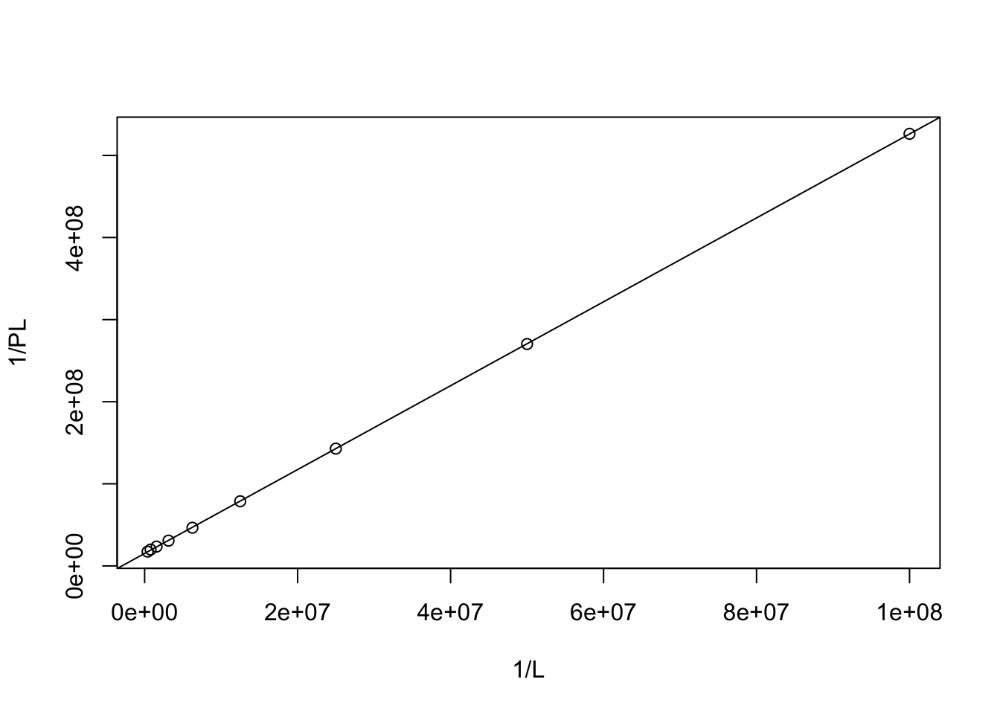

2019
Guinea pig
A guinea pig was given a single injection of 24NaCl (0.5ml of 0.5\(\mu\)Ci/ml). Subsequently, 0.2 ml samples of blood were taken at intervals and counted for radioactivity. The following results were obtained. The efficiency of counting 24Na is 30%.
(a) Given that the radioactive half-life of 24Na is 15h, calculate the biological half life of Na+ in the guinea pig body. Why are these values different?
Radioactive decay is a first-order process, so the rate of decay is proportional to the amount of the decaying substance. This can be expressed with a differential equation: \(-\frac{dA}{dt}=kA\), which can be integrated to give:
\[\ln{A} = \ln{A_0}-kt\]
where \(A_0\) is the initial radioactivity, \(t\) is the time elapsed, \(k\) is the decay constant, and \(A\) is the radioactivity at time \(t\). A linear relationship exists between \(\ln{A}\) and \(t\):
t <- c(1, 3, 5, 10, 16, 24) # in hours
A <- c(3604, 2928, 2376, 1412, 756, 329)/0.3 # corrected for efficiency
mod <- lm(log(A) ~ t)
summary(mod)##
## Call:
## lm(formula = log(A) ~ t)
##
## Residuals:
## 1 2 3 4 5 6
## 2.578e-05 4.796e-04 -2.429e-04 -2.077e-04 -3.928e-04 3.380e-04
##
## Coefficients:
## Estimate Std. Error t value Pr(>|t|)
## (Intercept) 9.498e+00 2.503e-04 37948 < 2e-16 ***
## t -1.041e-01 1.972e-05 -5280 7.72e-15 ***
## ---
## Signif. codes: 0 '***' 0.001 '**' 0.01 '*' 0.05 '.' 0.1 ' ' 1
##
## Residual standard error: 0.0003878 on 4 degrees of freedom
## Multiple R-squared: 1, Adjusted R-squared: 1
## F-statistic: 2.787e+07 on 1 and 4 DF, p-value: 7.722e-15plot(t, log(A), xlab = 't (h)')
abline(coef(mod))
from linear regression, \(A_0=e^{9.498}=13333 \text{ cpm}\), and \(k=0.104 \text{ h}^{-1}\)
half life (total): \(t_{\frac{1}{2}}=\dfrac{\ln{2}}{k}=6.66 \text{ h}\)
Na+ in biological systems is continuously being excreted, and excretion is generally also a first-order process. So the result is that the overall loss of radioactivity is still a first-order process with a fixed, but shorter half life (i.e. larger \(k\)).
\[k_{\text{total}}=k_{\text{radioactivity}}+k_{\text{biological}}\]
\[\dfrac{\ln2}{6.66}=\dfrac{\ln{2}}{15}+\dfrac{\ln{2}}{t_{\frac{1}{2}{\text{bioogical}}}}\]
\[t_{\frac{1}{2}{\text{bioogical}}}=12.0\]
(b) Assuming that Na+ is essentially excluded from cell water (in the short term), calculate the volume of extracellular fluid in the guinea pig.
from (a), \(A_0=e^{9.498}=13333.3 \text{ cpm}\) (in 0.2ml sample), which gives a radioactivity per volume (of blood sample at t = 0): \(13333\div0.2=66666\text{ cpm ml}^{-1}\)
The total radioactivity is \(0.5\text{ ml}\times0.5\times10^{-6}\text{ Ci}\times2.2\times10^{12} = 550000\text{ cpm}\)
Volume: \(550000/66666=8.25\text{ ml}\)
Sulphate transport in Penicillium chrysogenum
An experiment was carried out to investigate sulphate transport in the fungus Penicillium chrysogenum. From a culture of an ATP sulphurylase deficient mutant, 1g (wet weight of mycelium was taken and suspended in 100 ml buffer. At t=0, 1ml of 1mM K235SO4 was added to the stirred suspension.
(a) 5ml aliquots were taken at 30s intervals, and the mycelium filtered, washed and counted for radioactivity. The following results were obtained.
## $`Cpm on filter after:`
## 30s 60s 90s 120s
## 10600 21000 31200 41900To establish the specific radioactivity of the added sulphate, 10\(\mu\)l of the stock 1mM K235SO4 was also counted, yielding a value of 12,000 cpm.
Calculate the sulphate transport rate in terms of \(\mu\)mol/min/g dry wt, assuming that the mycelium contained 15% (by weight) dry matter.
The measurement are made on 5mL aliquots. To calculate the cpm in the 100ml reaction mixture , multiply cpm values by 20. Then do a linear regression between cpm (of all fungus cells) and time elapsed.
t <- c(0.5, 1.0, 1.5, 2.0) # in minutes
A <- 20 * c(10600, 21000, 31200, 41900)
plot(t, A, xlab = 't (min)', ylab = 'A (cpm)'); abline(lm(A~t))
coef(lm(A~t))## (Intercept) t
## 3000 416400the coefficients gives \(A=3000 + 416400t\) where \(t\) (time elapsed) is in minutes and \(A\) in cpm. The slope is the change in cpm per minute (\(\dfrac{dA}{dt}=416400\text{ cpm min}^{-1}\))
From the data of pure K2SO~4, the specific radioactivity of K2SO~4 is
\(12000\text{ cpm}\div(10\times10^{-6}\text{ L}\times1\times10^{-3}\text{ M}=1.2\times10^{12}\text{ cpm mol}^{-1})\)
\[416400\text{ cpm min}^{-1}/(1.2\times10^{12}\text{ cpm mol}^{-1})\times10^6=0.347\text{ }\mu\text{mol min}^{-1}\]
1g mycelium is equivalent to 0.15g dry weight. Transport rate:
\[0.347/0.15=2.31\text{ }\mu\text{mol/min/g dry wt}\]
(b) Final samples were taken after 3h and 4h. At these times, the mycelium was too ‘hot’ to count accurately, but the medium contained 220 cpm/ml at both times. Estimate the equilibrium constant for the transport of sulphate in this organism, and comment on this value in terms of the free energy of transport.
Amount of sulfate in the medium at equilibrium: \(220\text{ cpm ml}^{-1}\times100\text{ ml}\div(1.2\times10^{12}\text{ cpm mol}^{-1})=1.833\times10^{-8}\text{ mol}\)
Total amount of sulfate: \(1\times10^{-3}\text{ L}\times1\times10^{-3}\text{ M}=1\times10^{-6}\text{ mol}\)
Amount of sulfate in fungi cells at equilibrium: \(1\times10^{-6}-1.833\times10^{-8}=9.817\times10^{-7}\)
For the reaction Xout\(\rightarrow\)Xin:
\[K=\dfrac{9.817\times10^{-7}}{1.833\times10^{-8}}=53.5\]
\[G^\circ=-RT\ln{K}=-9.8\text{ kJ mol}^{-1}\]
Sulfate transport into fungi cells is thermodynamically favourable, but the free energy change is not very large.
(c) How would these observations differ if a wild type organism, containing ATP sulphurylase, was used in these experiments?
Once ATP is sulfated, the sulfate groups are no longer free and will not affect the equilibrium between free sulfate ions on both sides. As ATP sulphurylase constantly consumes sulfate inside the cells, the equilibrium is never achieved and \(G=G^\circ+RT\ln Q\) will always be negative. Finally, almost all sulfate will enter the cells (and being added to ATP) and this is limited by the equilibrium between unsulfated and sulfated ATP.
RNA:DNA ratio
Mutant bacteria can be exploited to provide insight into the ratio of RNA to DNA within cells, if they rely on the uptake of radioactive nutrients. In one such study, a mutant E. coli with a mutation in the enzyme that synthesizes orotic acid and consequently requires uridine for growth was used. This mutant was grown in minimal medium supplemented with 14C uridine at a specific activity of 30 mCi/mmol. Ribosomal RNA was isolated from the culture.
The base composition of this RNA in mmol/200g was : Uracil = 128.4; Guanine = 189.0; Cytosine =132.4, Adenine = 163.4.
(a) Calculate the specific activity of the RNA in mCi/mg (Hint: think about pyrimidine synthesis when working out the specific activity of the RNA)
Purine synthesis and pyrimidine synthesis use different pathways. In this mutant E. coli uncapable of orotic acid synthesis, uracil and cytosine in RNA are derived from the radioactive 14C. Both uracil and cytosine molecules have 4 carbon atoms, so both have a specific activity of 30 mCi/mmol.
\[(128.4+132.4)\div(200\times 1000)=1.304\times10^{-3}\text{ mmol pyrimidine/mg RNA}\]
\[1.304\times10^{-3}\times30=0.0391\text{ mCi/mg RNA}\]
To determine the proportion of DNA complementary to the ribosomal DNA, Membrane filters were charged with 10g denatured E. coli DNA, and incubated with different concentrations of ribosomal RNA labelled as in part (a). A blank filter was also included in each incubation. After thorough washing and treatment with RNAase to remove unhybridised RNA, the radioactivity bound to the filters was determined by liquid scintillation counting. The results are shown in Table 1. 1 mCi = 2.2 x 109 dpm. The efficiency of counting is 80%.
(b) Determine the proportion of DNA complementary to the ribosomal RNA
According to the table, when binding is saturated (all 10g DNA is bound complementary RNA), the cpm is around (2828-130) or (2830-140).
\[[(2928-130)+(2830-140)]\div2\div0.8=3367.5\text{ cpm}\]
\[3367.5\div (2.2\times10^9)=1.531\text{ mCi}\]
\[1.531\text{ mCi}\div0.03912\text{ mCi/mg RNA}=3.91\times10^{-5}\text{ mg} = 3.91\times10^{-8}\text{ g RNA}\]
\[3.91\times10^{-8}\text{ g RNA}/10\text{ g DNA}=3.91\times10^{-9}\]
(c) If the total chain length of the two ribosomal RNA species is 1.5 x 106 Da, and the DNA content of a bacterial cell containing a single chromosome is 2.0 x109 Da, how many copies of the genes coding for ribosomal RNA are present in the bacterial chromosome? Speculate why the answer is not one.
Ratio of single rRNA copy to single chromosome:
\[(1.5\times 10^6)\div(2.0\times10^9)=7.5\times10^{-4}\]
The result of (b) should be greater than \(7.5\times10^{-4}\), but it was not, so the calculation would be invalid.
IP3 Receptor
An analogue of myo-inositol 1,4,5 trisphosphate (IP3) in which sulphur atoms replaced one of the oxygen atoms on each phosphate (IPS3) was used to probe membrane bound IP3 receptors in a membrane fraction of rat cerebellum. Cerebellar membranes (80\(\mu\)g protein) were incubated in a volume of 200\(\mu\)l with increasing concentrations (0.01-2.5 \(\mu\)M) of 35SIPS3 (7x109 dpm/\(\mu\)mol). After 30 mins, bound and free ligand were separated by centrifugation, and radioactivity measured in the pellet. To allow for non-specific binding, a parallel run was carried out at each IPS3 concentration with 0.5mM IP3 also present. The results obtained were as follows:
(a) Draw the structure of IP3, and briefly outline its role as an intracellular messenger.

Phospholipase C (PLC) cleaves PIP2 (phosphatidylinositol 4, 5-bisphosphate) into IP3 and DAG (diacylglycerol). This occurs, for example, in GPCR pathway (Gs\(\alpha\) activates PLC-\(\beta\)) and in tyrosine kinase pathway (the SH2 domain of PLC-\(\gamma\) docks it to phosphorylated tyrosines in RTK intracellular domain).
IP3 binds to its receptors located on ER membrane, which triggers release of Ca2+ ions. Ca2+ then activates downstream signalling pathways, such as those mediated by calmodulin.
(b) Determine the dissociation constant for the specific binding of IPS3 to the IP3 receptor.
The ratio of IPS3-receptor complex concentration to total receptor concentration under different IPS3 concentrations can be used to calculate \(K_d\). Here’s the proof:
For the equilibrium: \(\text{PL}\leftrightarrow\text{P + L}\), \(K_d = \dfrac{\text{[P][L]}}{\text{[PL]}}\), i.e. \(\text{[PL]}=\dfrac{\text{[P][L]}}{K_d}\)
the ratio thus simplifies to:
\[\dfrac{\text{[PL]}}{\text{[P]}_\text{total}}=\dfrac{\text{[PL]}}{\text{[PL]}+\text{[P]}} = \dfrac{\dfrac{\text{[P][L]}}{K_d}}{\dfrac{\text{[P][L]}}{K_d}+\text{[P]}}=\dfrac{\text{[L]}}{\text{[L]}+K_d}\]
Taking double reciprocal:
\[\dfrac{1}{\text{[PL]}} = \dfrac{1}{\text{[P]}_\text{total}} + \dfrac{K_d}{\text{[P]}_\text{total}\text{[L]}}\]
Plotting \(\dfrac{1}{\text{[PL]}}\) against \(\dfrac{1}{\text{[L]}}\), the intercept is \(\dfrac{1}{\text{[P]}_\text{total}}\) and the gradient is \(\dfrac{K_d}{\text{[P]}_\text{total}}\)
The cpm due to specific (real PL) binding is first calculated:
all_cpm <- c(2770, 5385, 10196, 18587, 31694, 48712, 65930, 83190, 106190)
non_specific <- c(110, 205, 396, 807, 1594, 3212, 6430, 12770, 25690)
(specific <- all_cpm - non_specific) # unit: cpm## [1] 2660 5180 9800 17780 30100 45500 59500 70420 80500and the concentrations of PL are:
(PL <- specific/7e9/200) # in M## [1] 1.90e-09 3.70e-09 7.00e-09 1.27e-08 2.15e-08 3.25e-08 4.25e-08 5.03e-08
## [9] 5.75e-08the corresponding concentrations of L are:
(L <- c(.01, .02, .04, .08, .16, .32, .64, 1.28, 2.56)/1e6) # in M## [1] 1.00e-08 2.00e-08 4.00e-08 8.00e-08 1.60e-07 3.20e-07 6.40e-07 1.28e-06
## [9] 2.56e-06Linear modelling of \(\dfrac{1}{\text{[PL]}}\) against \(\dfrac{1}{\text{[L]}}\):
y <- 1/PL; x <- 1/L
(coef <- coef(lm(y~x)))## (Intercept) x
## 1.516132e+07 5.109047e+00plot(1/L, 1/PL)
abline(coef = coef)
\(\dfrac{1}{\text{[P]}_\text{total}} = 1.516\times10^7\), \(\text{[P]}_\text{total}=6.596\times10^{-8}\text{ M}\)
\(\dfrac{K_d}{\text{[P]}_\text{total}}=5.109\), \(K_d=6.596\times10^{-8}\times5.109=3.370\times10^{-7} \text{ M}\)
(c) Determine the density of IP3 receptors in the membrane preparation used.
From (b), \(\text{[P]}_\text{total}=6.596\times10^{-8}\text{ M}\)
Given mass of total protein is 80\(\mu\)g and the volume is 200\(\mu\)l, the density is:
\[80\times10^{-6}\div(200\times10^{-6}\times 6.596\times10^{-8})=6.06\times10^6 \text{ Da}\]
PPiase
Cytosolic pyrophosphatase (PPiase) (molecular weight 71,000 Da) was purified from yeast, and the activity of the final preparation measured by following the release of 32PPi from 32PPi. Each reaction tube contained 0.5ml buffer (pH 7.4) and 32PPi (400,000 cpm), together with unlabelled PPi to the final concentration shown below. (The concentration of 32PPi can be assumed to be negligible.) The reaction was started by the addition of 2\(\mu\)l (0.2ng) enzyme and stopped after 1 min by the addition of trichloroacetic acid. 32PPi was then separated from the remaining 32PPi and measured by scintillation counting.
Take the Lineweaver-Burk equation (double reciprocal of the Michaelis-Mention equation):
\[\dfrac{1}{v}=\dfrac{K_m}{V_{\text{max}}\text{[S]}}+\dfrac{1}{V_{\text{max}}}\]
In this equation, \(v\) refers to the total rate of hydrolysis of both PPi and 32PPi, and [S] is the total concentration of PPi and 32PPi.
Let concentration of 32PPi be \(c_0\) (which is a constant), the concentration of PPi be \(c^\text{apparent}\), the ‘apparent’ rate that is due to the hydrolysis of radioactive 32PPi be \(v^\text{apparent}\), then:
\[\text{[S]}=c_0 + c^\text{apparent}\]
and because radioactivity (isotopes) does not affect chemical reactivity, the ratio of the apparent rate to the total rate should simply equal to the ratio of the concentration of radioactive 32PPi to the total concentration of PPi
\[\dfrac{v^\text{apparent}}{v}= \dfrac{c_0}{c^\text{apparent}+c_0}\]
Substituting into the Lineweaver-Burk equation:
\[\dfrac{1}{\left(\dfrac{v^\text{apparent}}{\left(\dfrac{c_0}{c^\text{apparent} + c_0}\right)}\right)}=\dfrac{K_m}{V_{\text{max}}( c^\text{apparent}+c_0)}+\dfrac{1}{V_{\text{max}}}\]
Rearranging and simplifying:
\[\dfrac{1}{v^\text{apparent}}=\dfrac{K_m+c_0}{V_{\text{max}}c_0}+\dfrac{c^\text{apparent}}{V_{\text{max}}c_0}\]
Obviously, there should be a linear relationship–\(\dfrac{1}{v^\text{apparent}}\) against \(c^\text{apparent}\), with a gradient of \(\dfrac{1}{V_{\text{max}}c_0}\) and an intercept of \(\dfrac{K_m+c_0}{V_{\text{max}}c_0}\)
Linear modelling:
capp <- c(.24, .48, .96, 1.92, 3.84, 7.68, 15.4, 30.7, 61.4, 122.9)
vapp <- c(9274, 9351, 8590, 7392, 5784, 4061, 2502, 1426, 778, 437)
x <- capp; y <- 1/vapp
(coef <- coef(lm(y~x)))## (Intercept) x
## 1.133102e-04 1.803159e-05plot(capp, 1/vapp)
abline(coef = coef)
\(\dfrac{1}{V_{\text{max}}c_0}=1.803\times10^{-5}\rightarrow V_{\text{max}}c_0=55458\text{ cpm min}^{-1}\mu\text{M}\)
\(\dfrac{K_m+c_0}{V_{\text{max}}c_0}=1.133\times10^{-4}\text{ cpm}^{-1}\text{ min}\).
\(K_m+c_0=1.133\times10^{-4}\times 55458=6.283\text{ }\mu\text{M}\)